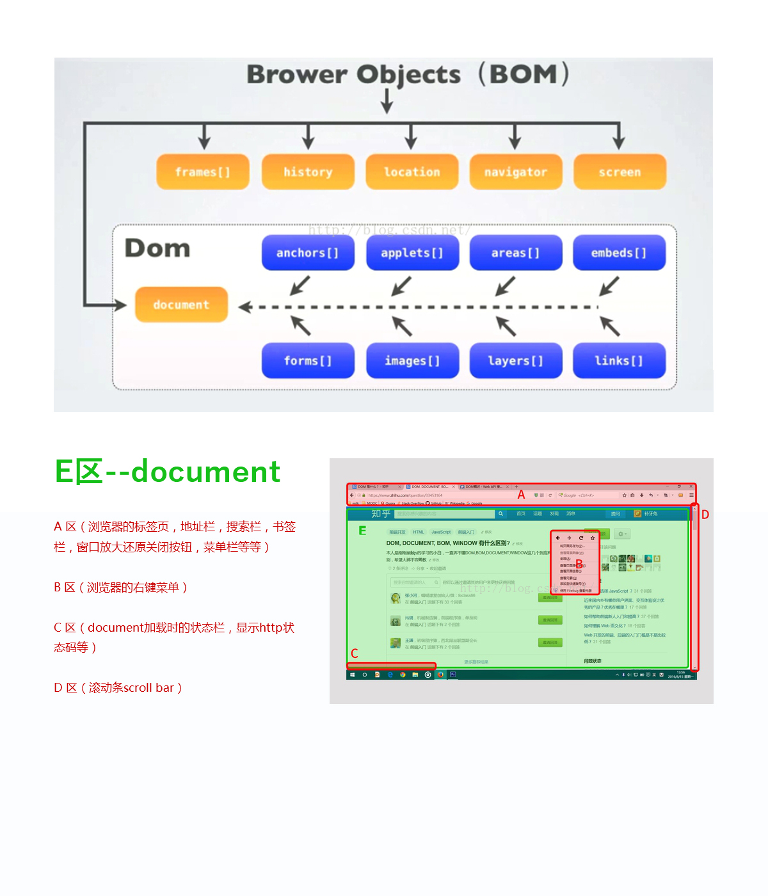
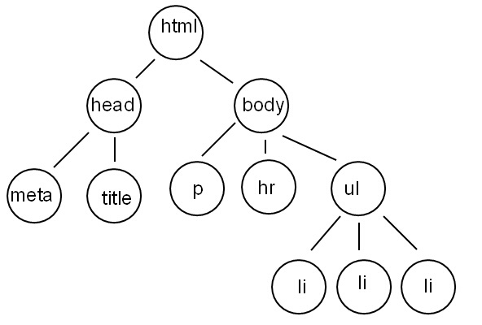

<!DOCTYPE html><html><head><meta charset="utf-8"><title>教学讲义 | 技术学派</title><meta name="viewport" content="width=device-width,initial-scale=1,maximum-scale=1"><meta name="description" content="第一章 BOMBOM (browser object model) 浏览器对象模型第一节 window对象我们学习js语言，是要操作浏览器中的内容，要操作就要先找到要操作的东西，浏览器将js要操作的所有东西打包成一个对象，供js操作，这个对象就是window对象window对象是js的顶级对象（全局对象，宿主对象）可以全局访问window的属性和方法，在使用的时候，可以省略window123win"><meta property="og:type" content="website"><meta property="og:title" content="教学讲义"><meta property="og:url" content="http://www.JiShuXuePai.com/tech/bom/notes.html"><meta property="og:site_name" content="技术学派"><meta property="og:description" content="第一章 BOMBOM (browser object model) 浏览器对象模型第一节 window对象我们学习js语言，是要操作浏览器中的内容，要操作就要先找到要操作的东西，浏览器将js要操作的所有东西打包成一个对象，供js操作，这个对象就是window对象window对象是js的顶级对象（全局对象，宿主对象）可以全局访问window的属性和方法，在使用的时候，可以省略window123win"><meta property="og:locale" content="zh-CN"><meta property="og:image" content="http://www.jishuxuepai.com/tech/bom/images/bom01.jpg"><meta property="og:updated_time" content="2018-05-11T08:14:15.841Z"><meta name="twitter:card" content="summary"><meta name="twitter:title" content="教学讲义"><meta name="twitter:description" content="第一章 BOMBOM (browser object model) 浏览器对象模型第一节 window对象我们学习js语言，是要操作浏览器中的内容，要操作就要先找到要操作的东西，浏览器将js要操作的所有东西打包成一个对象，供js操作，这个对象就是window对象window对象是js的顶级对象（全局对象，宿主对象）可以全局访问window的属性和方法，在使用的时候，可以省略window123win"><meta name="twitter:image" content="http://www.jishuxuepai.com/tech/bom/images/bom01.jpg"><link rel="stylesheet" href="/libs/bootstrap/bootstrap-grid.css"><link rel="stylesheet" href="/libs/font-awesome/css/font-awesome.min.css"><link rel="stylesheet" href="/libs/titillium-web/styles.css"><link rel="stylesheet" href="/libs/source-code-pro/styles.css"><link rel="stylesheet" href="/css/style.css"><script src="/libs/jquery/jquery.min.js"></script><link rel="stylesheet" href="/libs/lightgallery/css/lightgallery.min.css"><link rel="stylesheet" href="/libs/justified-gallery/justifiedGallery.min.css"><script>var _hmt=_hmt||[];!function(){var e=document.createElement("script");e.src="//hm.baidu.com/hm.js?4c1bd812de3c30edbaa2b803c66f0a04";var t=document.getElementsByTagName("script")[0];t.parentNode.insertBefore(e,t)}()</script></head></html><body><div id="wrap"><header id="header"><div id="header-outer" class="outer"><div class="container"><div class="container-inner"><div id="header-title"><h1 class="logo-wrap"><a href="/" class="logo"></a></h1></div><div id="header-inner" class="nav-container"><a id="main-nav-toggle" class="nav-icon fa fa-bars">菜单</a><div class="nav-container-inner"><ul id="main-nav"><li class="main-nav-list-item"><a class="main-nav-list-link" href="/">主页</a></li><li class="main-nav-list-item"><a class="main-nav-list-link" href="/edu/index.html">学编程</a></li><li class="main-nav-list-item"><a class="main-nav-list-link" href="/blog/">博客</a></li><li class="main-nav-list-item"><a class="main-nav-list-link" href="/nav.html">网站导航</a></li><li class="main-nav-list-item"><a class="main-nav-list-link" href="/tips.html">学习建议</a></li></ul><nav id="sub-nav"><div id="search-form-wrap"><form class="search-form"><input type="text" class="ins-search-input search-form-input" placeholder="搜索"> <button type="submit" class="search-form-submit"></button></form><div class="ins-search"><div class="ins-search-mask"></div><div class="ins-search-container"><div class="ins-input-wrapper"><input type="text" class="ins-search-input" placeholder="想要查找什么..."> <span class="ins-close ins-selectable"><i class="fa fa-times-circle"></i></span></div><div class="ins-section-wrapper"><div class="ins-section-container"></div></div></div></div><script>window.INSIGHT_CONFIG={TRANSLATION:{POSTS:"文章",PAGES:"页面",CATEGORIES:"分类",TAGS:"标签",UNTITLED:"(未命名)"},ROOT_URL:"/",CONTENT_URL:"/content.json"}</script><script src="/js/insight.js"></script></div></nav></div></div></div></div></div></header><div class="container"><div class="main-body container-inner"><div class="main-body-inner"><section id="main"><div class="main-body-header"><h1 class="header"><em class="page-title-link" data-url="/tech/bom/notes.html">教学讲义</em><div class="author">果志青</div></h1></div><div class="main-body-content"><article id="page-" class="article article-single article-type-page" itemscope itemprop="blogPost"><div class="article-inner"><header class="article-header"><h1 class="article-title" itemprop="name">教学讲义</h1></header><div class="article-entry" itemprop="articleBody"><h1 id="第一章-BOM"><a href="#第一章-BOM" class="headerlink" title="第一章 BOM"></a>第一章 BOM</h1><ul><li>BOM (browser object model) 浏览器对象模型</li></ul><h2 id="第一节-window对象"><a href="#第一节-window对象" class="headerlink" title="第一节 window对象"></a>第一节 window对象</h2><blockquote><p>我们学习js语言，是要操作浏览器中的内容，要操作就要先找到要操作的东西，浏览器将js要操作的所有东西打包成一个对象，供js操作，这个对象就是window对象</p></blockquote><ul><li><p>window对象是js的顶级对象（全局对象，宿主对象）</p><ul><li><p>可以全局访问</p></li><li><p>window的属性和方法，在使用的时候，可以省略window</p></li></ul></li></ul><figure class="highlight js"><table><tr><td class="gutter"><pre><span class="line">1</span><br><span class="line">2</span><br><span class="line">3</span><br></pre></td><td class="code"><pre><span class="line"><span class="built_in">window</span>.alert(<span class="number">111</span>)</span><br><span class="line">alert(<span class="number">111</span>)		<span class="comment">//此处省略window</span></span><br><span class="line"><span class="comment">//用js语言声明的变量是window的属性，用js声明的函数，是window</span></span><br></pre></td></tr></table></figure><ul><li>全局变量存放在window中，不用var声明的变量是全局变量</li></ul><figure class="highlight js"><table><tr><td class="gutter"><pre><span class="line">1</span><br><span class="line">2</span><br></pre></td><td class="code"><pre><span class="line"><span class="keyword">var</span> a = <span class="string">"火星时代"</span>;</span><br><span class="line">alert(<span class="built_in">window</span>.a)	<span class="comment">//火星时代</span></span><br></pre></td></tr></table></figure><h2 id="第二节-BOM-属性"><a href="#第二节-BOM-属性" class="headerlink" title="第二节 BOM 属性"></a>第二节 BOM 属性</h2><ul><li>BOM作为浏览器对象，包含六大属性，这些属性本身也是对象，其中，document属性被W3C定义为DOM。</li></ul><p></p><ul><li>1 history 历史记录</li></ul><figure class="highlight js"><table><tr><td class="gutter"><pre><span class="line">1</span><br><span class="line">2</span><br><span class="line">3</span><br><span class="line">4</span><br><span class="line">5</span><br></pre></td><td class="code"><pre><span class="line"><span class="built_in">window</span>.history.go(<span class="number">1</span>) <span class="comment">//前进（跳转）</span></span><br><span class="line"><span class="built_in">window</span>.history.go(<span class="number">-1</span>) <span class="comment">//后退（跳转）</span></span><br><span class="line"><span class="built_in">window</span>.history.forward() <span class="comment">//前进</span></span><br><span class="line"><span class="built_in">window</span>.history.back() <span class="comment">//后退</span></span><br><span class="line"><span class="comment">//浏览器中的前进后退按钮就是操作的这些方法</span></span><br></pre></td></tr></table></figure><ul><li>2 location 定位</li></ul><figure class="highlight js"><table><tr><td class="gutter"><pre><span class="line">1</span><br><span class="line">2</span><br><span class="line">3</span><br><span class="line">4</span><br></pre></td><td class="code"><pre><span class="line"><span class="built_in">window</span>.location.href=<span class="string">'http://www.baidu.com/'</span>; <span class="comment">//跳转地址</span></span><br><span class="line"></span><br><span class="line"><span class="built_in">window</span>.location.reload()  <span class="comment">//刷新页面</span></span><br><span class="line"><span class="comment">//&lt;a&gt;标签可以跳转页面，js的location属性也可以跳转页面</span></span><br></pre></td></tr></table></figure><ul><li>3 navigator 导航</li></ul><figure class="highlight js"><table><tr><td class="gutter"><pre><span class="line">1</span><br><span class="line">2</span><br></pre></td><td class="code"><pre><span class="line"><span class="built_in">window</span>.navigator.userAgent  </span><br><span class="line"><span class="comment">//可以读取用户的相关信息，如浏览器类型、版本、操作系统类型、内核（移动端）、浏览器引擎类型等</span></span><br></pre></td></tr></table></figure><ul><li>4 screen 屏幕</li></ul><figure class="highlight js"><table><tr><td class="gutter"><pre><span class="line">1</span><br><span class="line">2</span><br><span class="line">3</span><br></pre></td><td class="code"><pre><span class="line"><span class="built_in">window</span>.screen.width    <span class="comment">//返回当前屏幕宽度(分辨率值) </span></span><br><span class="line"><span class="built_in">window</span>.screen.height    <span class="comment">//返回当前屏幕高度(分辨率值) </span></span><br><span class="line"><span class="built_in">document</span>.documentElement.clientWidth <span class="comment">//浏览器窗口宽度（后面会讲解，用作对比）</span></span><br></pre></td></tr></table></figure><ul><li>5 frames 框架集</li></ul><figure class="highlight html"><table><tr><td class="gutter"><pre><span class="line">1</span><br><span class="line">2</span><br><span class="line">3</span><br></pre></td><td class="code"><pre><span class="line"><span class="tag">&lt;<span class="name">frameset</span> <span class="attr">rows</span>=<span class="string">"150,*,150"</span> <span class="attr">cols</span>=<span class="string">"*"</span>&gt;</span></span><br><span class="line">	<span class="tag">&lt;<span class="name">--</span> 参考案例 <span class="attr">--</span>&gt;</span></span><br><span class="line"><span class="tag">&lt;/<span class="name">frameset</span>&gt;</span></span><br></pre></td></tr></table></figure><ul><li>6 document 文档（DOM）<ul><li>document是BOM属性中最重要的一个，后面详细讲解</li></ul></li></ul><h2 id="第三节-BOM方法"><a href="#第三节-BOM方法" class="headerlink" title="第三节  BOM方法"></a>第三节 BOM方法</h2><blockquote><p>BOM提供了一系列的全局方法，方便随时调用。简而言之，这些方法都是浏览器提供的。</p></blockquote><h3 id="1-BOM弹框"><a href="#1-BOM弹框" class="headerlink" title="1. BOM弹框"></a>1. BOM弹框</h3><ul><li><p>alert( ) 警告弹框</p></li><li><p>confirm( ) 确认弹框</p></li></ul><figure class="highlight js"><table><tr><td class="gutter"><pre><span class="line">1</span><br><span class="line">2</span><br><span class="line">3</span><br><span class="line">4</span><br><span class="line">5</span><br></pre></td><td class="code"><pre><span class="line"><span class="keyword">if</span>(confirm( <span class="string">"你确定吗？"</span> ))&#123;</span><br><span class="line">  	<span class="comment">//点击确定之后执行的代码</span></span><br><span class="line">&#125;<span class="keyword">else</span>&#123;</span><br><span class="line">  	<span class="comment">//点击取消之后执行的代码</span></span><br><span class="line">&#125;</span><br></pre></td></tr></table></figure><ul><li>prompt( ) 提示输入弹框</li></ul><figure class="highlight js"><table><tr><td class="gutter"><pre><span class="line">1</span><br></pre></td><td class="code"><pre><span class="line">oBox.innerHTML = prompt( <span class="string">"请输入内容"</span> );</span><br></pre></td></tr></table></figure><ul><li>confirm和prompt因样式难看，已经被淘汰</li></ul><h3 id="2-BOM定时器"><a href="#2-BOM定时器" class="headerlink" title="2. BOM定时器"></a>2. BOM定时器</h3><ul><li>setTimeout() 超时定时器</li></ul><figure class="highlight js"><table><tr><td class="gutter"><pre><span class="line">1</span><br><span class="line">2</span><br><span class="line">3</span><br><span class="line">4</span><br></pre></td><td class="code"><pre><span class="line">setTimeout(<span class="function"><span class="keyword">function</span>(<span class="params"></span>)</span>&#123;	<span class="comment">//只执行一次</span></span><br><span class="line">  	<span class="built_in">console</span>.log(<span class="string">"火星时代"</span>)</span><br><span class="line">&#125;,<span class="number">1000</span>)</span><br><span class="line"><span class="comment">//一秒之后控制台输出  火星时代</span></span><br></pre></td></tr></table></figure><ul><li>setInterval( ) 间隔定时器</li></ul><figure class="highlight js"><table><tr><td class="gutter"><pre><span class="line">1</span><br><span class="line">2</span><br><span class="line">3</span><br><span class="line">4</span><br></pre></td><td class="code"><pre><span class="line">setInterval(<span class="function"><span class="keyword">function</span>(<span class="params"></span>)</span>&#123;	<span class="comment">//会无限执行，除非清除掉计时器</span></span><br><span class="line">  	<span class="built_in">console</span>.log(<span class="string">"火星时代"</span>)</span><br><span class="line">&#125;,<span class="number">1000</span>)	<span class="comment">//单位毫秒 1秒=1000毫秒</span></span><br><span class="line"><span class="comment">//每隔一秒控制台输出  火星时代</span></span><br></pre></td></tr></table></figure><ul><li><p>取消定时器</p><ul><li>计时器有一个返回值，代表当前的定时器，这个标识是唯一的。</li><li>将返回值赋值给一个变量，使用清除计时器的方法即可</li></ul></li></ul><figure class="highlight js"><table><tr><td class="gutter"><pre><span class="line">1</span><br><span class="line">2</span><br><span class="line">3</span><br><span class="line">4</span><br><span class="line">5</span><br><span class="line">6</span><br><span class="line">7</span><br></pre></td><td class="code"><pre><span class="line"><span class="comment">//将计时器的返回值赋值给一个变量</span></span><br><span class="line"><span class="keyword">var</span> timer = setInterval(<span class="function"><span class="keyword">function</span>(<span class="params"></span>)</span>&#123;&#125;,<span class="number">1000</span>);</span><br><span class="line"><span class="comment">//计时器方法清除这个变量</span></span><br><span class="line">clearInterval(timer);</span><br><span class="line"><span class="comment">//------------------------------------</span></span><br><span class="line"><span class="keyword">var</span> timer1 = setTimeout(<span class="function"><span class="keyword">function</span>(<span class="params"></span>)</span>&#123;&#125;,<span class="number">1000</span>);</span><br><span class="line">clearTimeout(timer1);</span><br></pre></td></tr></table></figure><ul><li><p>间隔定时器的小套路</p><ul><li><p>1 将计时器返回值赋值给一个变量</p></li><li><p>2 间隔计时器内部有一个计数器在变化</p></li><li><p>3 执行计数器，当计数器达到程序的要求时，清除计时器</p><figure class="highlight js"><table><tr><td class="gutter"><pre><span class="line">1</span><br><span class="line">2</span><br><span class="line">3</span><br><span class="line">4</span><br><span class="line">5</span><br><span class="line">6</span><br></pre></td><td class="code"><pre><span class="line"><span class="keyword">var</span> i=<span class="number">0</span>;	<span class="comment">//计数器</span></span><br><span class="line"><span class="keyword">var</span> timer = <span class="literal">null</span>;	<span class="comment">//计时器的变量</span></span><br><span class="line">timer = setInterval(<span class="function"><span class="keyword">function</span>(<span class="params"></span>)</span>&#123;</span><br><span class="line">  	<span class="built_in">console</span>.log(i)		<span class="comment">//代码块</span></span><br><span class="line">    <span class="keyword">if</span>(i==<span class="number">10</span>)&#123; clearInterval( timer) &#125;		/判断条件，清除计时器</span><br><span class="line">&#125;,<span class="number">1000</span>);</span><br></pre></td></tr></table></figure></li></ul></li><li><p>数据格式整理</p><ul><li>编程==数据+算法</li></ul></li><li><p>案例：红绿灯</p><ul><li>点击div，div颜色在两个颜色之间转换</li><li>点击div，在三个颜色之间转换</li><li>点击按钮，div在三个颜色之间转换</li><li>点击按钮，计时器div在三个颜色之间转换</li><li>两个按钮，分别控制计时器开始/暂停</li><li>一个按钮，控制计时器开始/暂停</li></ul></li><li><p>案例：判断星期几</p><ul><li>定义一个函数，通过传参，判断参数不同，输出星期几</li><li>定义函数，数组，判断参数不同，输出星期几</li></ul></li></ul><h2 id="第四节-BOM和DOM标准"><a href="#第四节-BOM和DOM标准" class="headerlink" title="第四节 BOM和DOM标准"></a>第四节 BOM和DOM标准</h2><ul><li>BOM 没有标准</li><li>DOM w3c提供dom标准，css标准</li><li>DOM标准和方法在一直扩充</li><li>JavaScript ECMA提供标准</li></ul><h1 id="第二章-获取DOM对象"><a href="#第二章-获取DOM对象" class="headerlink" title="第二章 获取DOM对象"></a>第二章 获取DOM对象</h1><h2 id="第一节-DOM"><a href="#第一节-DOM" class="headerlink" title="第一节 DOM"></a>第一节 DOM</h2><ul><li>DOM (document object model 文档对象模型)</li><li>每个载入浏览器的 HTML 文档都会成为 Document 对象。</li><li>Document 对象使我们可以从脚本中对 HTML 页面中的所有元素进行访问（读取和赋值）。</li></ul><h2 id="第二节-获取DOM对象得方法"><a href="#第二节-获取DOM对象得方法" class="headerlink" title="第二节 获取DOM对象得方法"></a>第二节 获取DOM对象得方法</h2><blockquote><p>页面交互的核心就是操作DOM元素，其中，第一步就是要找到要操作的DOM对象</p></blockquote><h3 id="1-getElementById"><a href="#1-getElementById" class="headerlink" title="1. getElementById( )"></a>1. getElementById( )</h3><ul><li><p>通过id获取DOM对象（唯一对象）</p></li><li><p>以函数返回值的形式返回找到的对象</p></li><li><p>如果没有找到，则返回null</p><figure class="highlight js"><table><tr><td class="gutter"><pre><span class="line">1</span><br><span class="line">2</span><br></pre></td><td class="code"><pre><span class="line"><span class="keyword">var</span> myBox = <span class="built_in">document</span>.getElementById(<span class="string">'box'</span>);</span><br><span class="line"><span class="comment">//找到的元素是唯一的对象</span></span><br></pre></td></tr></table></figure></li></ul><h3 id="2-getElementsByTagName"><a href="#2-getElementsByTagName" class="headerlink" title="2. getElementsByTagName( )"></a>2. getElementsByTagName( )</h3><ul><li>通过标签获取DOM对象（对象集合）</li><li>以函数返回值的形式返回找到的对象集合。</li><li>如果没有找到任何元素，返回一个空对象集合，转化成布尔值为true</li></ul><figure class="highlight js"><table><tr><td class="gutter"><pre><span class="line">1</span><br><span class="line">2</span><br><span class="line">3</span><br></pre></td><td class="code"><pre><span class="line"><span class="comment">//在文档中找到标签名是div的所有标签</span></span><br><span class="line"><span class="keyword">var</span> divList = <span class="built_in">document</span>.getElementsByTagName(<span class="string">'div'</span>);</span><br><span class="line"><span class="comment">//可以在document下面直接 查找</span></span><br></pre></td></tr></table></figure><figure class="highlight js"><table><tr><td class="gutter"><pre><span class="line">1</span><br><span class="line">2</span><br><span class="line">3</span><br><span class="line">4</span><br></pre></td><td class="code"><pre><span class="line"><span class="keyword">var</span> myBox = myBox.getElementById(<span class="string">'box'</span>);</span><br><span class="line"><span class="comment">//在myBox里面，找到标签名是div的所有标签</span></span><br><span class="line"><span class="keyword">var</span> divList = <span class="built_in">document</span>.getElementsByTagName(<span class="string">'div'</span>);</span><br><span class="line"><span class="comment">//也可以在特定的元素下面查找，查找的范围不一样</span></span><br></pre></td></tr></table></figure><h3 id="3-getElementsByClassName"><a href="#3-getElementsByClassName" class="headerlink" title="3. getElementsByClassName( )"></a>3. getElementsByClassName( )</h3><ul><li>通过页面中标签的class属性值获取DOM对象（对象集合）</li><li>以函数返回值的形式返回找到的对象集合。</li><li>如果没有找到任何元素，返回一个空对象集合，转化成布尔值为true</li></ul><figure class="highlight js"><table><tr><td class="gutter"><pre><span class="line">1</span><br><span class="line">2</span><br></pre></td><td class="code"><pre><span class="line"><span class="comment">//在文档中，找到所有class名为sub_nav的标签</span></span><br><span class="line"><span class="keyword">var</span> divList = <span class="built_in">document</span>.getElementsByClassName(<span class="string">'sub_nav'</span>);</span><br></pre></td></tr></table></figure><ul><li><p>通过getElementsByTagName和getElementsByClassName找到的事一个对象集合，类似于一个数组，包含着所有查找到的对象。</p></li><li><p>即使只找到了一个对象，也是对象集合。</p></li><li><p>对象集合跟数组类似，可以通过下标查找集合中的对象，也有length属性</p></li><li><p>对象集合的length是只读的，不能修改</p><figure class="highlight js"><table><tr><td class="gutter"><pre><span class="line">1</span><br><span class="line">2</span><br><span class="line">3</span><br><span class="line">4</span><br><span class="line">5</span><br></pre></td><td class="code"><pre><span class="line"><span class="comment">//数组的长度可以修改</span></span><br><span class="line"><span class="keyword">var</span> arr = [<span class="string">"火"</span>,<span class="string">"星"</span>,<span class="string">"时"</span>,<span class="string">"代"</span>];</span><br><span class="line">arr.length = <span class="number">2</span>;</span><br><span class="line"><span class="built_in">console</span>.log(arr.length) <span class="comment">// 2</span></span><br><span class="line"><span class="built_in">console</span>.log(arr) <span class="comment">// ["火","星"]</span></span><br></pre></td></tr></table></figure></li></ul><figure class="highlight js"><table><tr><td class="gutter"><pre><span class="line">1</span><br><span class="line">2</span><br><span class="line">3</span><br><span class="line">4</span><br><span class="line">5</span><br></pre></td><td class="code"><pre><span class="line">&lt;div&gt;<span class="number">1</span>&lt;<span class="regexp">/div&gt;  &lt;div&gt;1&lt;/</span>div&gt;  <span class="xml"><span class="tag">&lt;<span class="name">div</span>&gt;</span>1<span class="tag">&lt;/<span class="name">div</span>&gt;</span></span>  &lt;div&gt;<span class="number">1</span>&lt;<span class="regexp">/div&gt;  &lt;div&gt;1&lt;/</span>div&gt;</span><br><span class="line"><span class="keyword">var</span> divList = <span class="built_in">document</span>.getElementsByTagName(<span class="string">'div'</span>);	<span class="comment">//对象集合</span></span><br><span class="line"><span class="built_in">console</span>.log(divList.length)	<span class="comment">//5</span></span><br><span class="line">divList.length = <span class="number">3</span>;	<span class="comment">//对象集合的长度不能修改</span></span><br><span class="line"><span class="built_in">console</span>.log(divList.length)	<span class="comment">//5</span></span><br></pre></td></tr></table></figure><ul><li>想要操作对象集合中的对象，要在对象集合后面加索引值才能找到具体的对象</li></ul><figure class="highlight js"><table><tr><td class="gutter"><pre><span class="line">1</span><br><span class="line">2</span><br><span class="line">3</span><br></pre></td><td class="code"><pre><span class="line">&lt;div&gt;<span class="number">1</span>&lt;<span class="regexp">/div&gt;  &lt;div&gt;1&lt;/</span>div&gt;  <span class="xml"><span class="tag">&lt;<span class="name">div</span>&gt;</span>1<span class="tag">&lt;/<span class="name">div</span>&gt;</span></span>  &lt;div&gt;<span class="number">1</span>&lt;<span class="regexp">/div&gt;  &lt;div&gt;1&lt;/</span>div&gt;</span><br><span class="line"><span class="keyword">var</span> divList = <span class="built_in">document</span>.getElementsByTagName(<span class="string">'div'</span>);	<span class="comment">//对象集合</span></span><br><span class="line">divList[<span class="number">1</span>].style.background = <span class="string">"red"</span>;<span class="comment">//第二个div背景变成红色</span></span><br></pre></td></tr></table></figure><h2 id="第三节-遍历对象集合"><a href="#第三节-遍历对象集合" class="headerlink" title="第三节 遍历对象集合"></a>第三节 遍历对象集合</h2><ul><li><p>for循环：</p><ul><li>使用for循环可以遍历对象集合中所有的对象</li></ul></li></ul><figure class="highlight js"><table><tr><td class="gutter"><pre><span class="line">1</span><br><span class="line">2</span><br><span class="line">3</span><br><span class="line">4</span><br></pre></td><td class="code"><pre><span class="line"><span class="keyword">var</span> divList = <span class="built_in">document</span>.getElementsByClassName(<span class="string">'sub_nav'</span>);</span><br><span class="line"><span class="keyword">for</span>(<span class="keyword">var</span> i=<span class="number">0</span>; i&lt;divList.length; i++)&#123;	<span class="comment">//语法三条语句，第三条不加“;”号</span></span><br><span class="line">	divListp[i].style.background = <span class="string">'red'</span>;</span><br><span class="line">&#125;</span><br></pre></td></tr></table></figure><ul><li><p>案例：点击按钮，所有li改变颜色</p></li><li><p>案例：点击按钮，所有li添加菜谱</p></li><li><p>案例：点击按钮，每个li逐次添加菜谱</p></li><li><p>案例：点击按钮，计时器操控逐次添加菜谱</p></li></ul><h2 id="第四节-节点方式找对象"><a href="#第四节-节点方式找对象" class="headerlink" title="第四节 节点方式找对象"></a>第四节 节点方式找对象</h2><h3 id="1-DOM树"><a href="#1-DOM树" class="headerlink" title="1. DOM树"></a>1. DOM树</h3><ul><li>DOM结构就象树一样，从文档根—document，逐步分支展开</li><li>每一个元素，都可以看作是树的一个分支节点</li><li>每一个元素（节点）之间都存在着如下的一些关系：<ul><li>根节点 父节点 子节点 兄弟节点</li></ul></li></ul><p>DOM树</p><h3 id="2-查找节点"><a href="#2-查找节点" class="headerlink" title="2. 查找节点"></a>2. 查找节点</h3><ul><li>父节点 —parentNode</li><li>第一级所有子节点 —children</li><li>第一个子节点 —firstElementChild</li><li>最后一个子节点 —lastElementChild</li><li>前一个兄弟节点 —previousElementSibling</li><li>后一个兄弟节点 —nextElementSibling</li></ul><h1 id="第三章-操作DOM对象属性和内容"><a href="#第三章-操作DOM对象属性和内容" class="headerlink" title="第三章 操作DOM对象属性和内容"></a>第三章 操作DOM对象属性和内容</h1><blockquote><p>任何一个html标签都包括标签名、内容、属性，本章节讲解如何操作一个标签</p></blockquote><h2 id="第一节-操作html标签"><a href="#第一节-操作html标签" class="headerlink" title="第一节 操作html标签"></a>第一节 操作html标签</h2><h3 id="1-标签名tagName"><a href="#1-标签名tagName" class="headerlink" title="1. 标签名tagName"></a>1. 标签名tagName</h3><ul><li><p>读取标签名 tagName</p></li><li><p>读取出来的标签名字全部是大写英文字母</p></li></ul><figure class="highlight html"><table><tr><td class="gutter"><pre><span class="line">1</span><br><span class="line">2</span><br><span class="line">3</span><br><span class="line">4</span><br><span class="line">5</span><br><span class="line">6</span><br><span class="line">7</span><br></pre></td><td class="code"><pre><span class="line"><span class="tag">&lt;<span class="name">div</span>&gt;</span></span><br><span class="line">	<span class="tag">&lt;<span class="name">span</span>&gt;</span><span class="tag">&lt;/<span class="name">span</span>&gt;</span>  </span><br><span class="line"><span class="tag">&lt;/<span class="name">div</span>&gt;</span></span><br><span class="line">var box = document.getElementsByTagName('div')[0];</span><br><span class="line">var text = document.getElementsByTagName('span')[0];</span><br><span class="line">console.log(box.tagName)// DIV</span><br><span class="line">console.log(text.tagName)// SPAN</span><br></pre></td></tr></table></figure><h3 id="2-标签内容-innerHTML-innerText"><a href="#2-标签内容-innerHTML-innerText" class="headerlink" title="2. 标签内容 (innerHTML|innerText)"></a>2. 标签内容 (innerHTML|innerText)</h3><ul><li><p>标签内容：innerHTML | innerText</p></li><li><p>读取内容：</p><ul><li>obj.innerHTML</li><li>obj.innerText</li></ul></li><li><p>设置内容：</p><ul><li>obj.innerHTML = “火星时代”;</li><li>obj.innerText = “火星时代”;</li></ul></li><li><p>innerHTML 和 innerText 的区别</p><ul><li>在设置标签内容的时候，innerHTML 能够将字符串中的标签名识别出来。而innerText 不会识别，只能当字符串使用</li></ul></li></ul><figure class="highlight js"><table><tr><td class="gutter"><pre><span class="line">1</span><br><span class="line">2</span><br></pre></td><td class="code"><pre><span class="line">oBox.innerHTML = <span class="string">"&lt;h1&gt;能识别出来h1标签&lt;/h1&gt;"</span>;</span><br><span class="line">oBox.innerText = <span class="string">"&lt;h1&gt;不能识别出来h1标签，双引号内部的字符串都会被当成字符串&lt;/h1&gt;"</span>;</span><br></pre></td></tr></table></figure><ul><li><p>innerHTML的坑</p><ul><li>在用字符串方法增加innerHTML 时，会覆盖原有内容，原有内容绑定的方法将消失</li></ul></li></ul><figure class="highlight js"><table><tr><td class="gutter"><pre><span class="line">1</span><br><span class="line">2</span><br><span class="line">3</span><br><span class="line">4</span><br></pre></td><td class="code"><pre><span class="line">oBox.innerHTML += <span class="string">"&lt;p&gt;火星时代&lt;/p&gt;"</span>;<span class="comment">//等价于下一行</span></span><br><span class="line">oBox.innerHTML = oBox.innerHTML + <span class="string">"&lt;p&gt;火星时代&lt;/p&gt;"</span>;<span class="comment">//相当于从新复制</span></span><br><span class="line"><span class="comment">//oBox原有标签中的内容所绑定的方法，会失效</span></span><br><span class="line"><span class="comment">//原因 i+=1  ====&gt;  i=i+1,被从新赋值了</span></span><br></pre></td></tr></table></figure><h3 id="3-html标签的属性"><a href="#3-html标签的属性" class="headerlink" title="3. html标签的属性"></a>3. html标签的属性</h3><ul><li>标签属性分类<ul><li>html标签的属性叫做attribute 分为三类<ul><li>全局属性 id class style title等，每个标签都有这些属性</li><li>自有属性 有些标签有自己的属性，如：<a>href <input> disabled</a></li><li>自定义属性 data- 用户自己定义的属性，如data-index。多用于记录数据</li></ul></li></ul></li></ul><figure class="highlight html"><table><tr><td class="gutter"><pre><span class="line">1</span><br><span class="line">2</span><br></pre></td><td class="code"><pre><span class="line"><span class="tag">&lt;<span class="name">div</span> <span class="attr">id</span>=<span class="string">"box"</span> <span class="attr">class</span>=<span class="string">"item"</span> <span class="attr">title</span>=<span class="string">"标题"</span> <span class="attr">data-index</span>=<span class="string">"1"</span>&gt;</span><span class="tag">&lt;/<span class="name">div</span>&gt;</span></span><br><span class="line"><span class="comment">&lt;!-- div是标签名 id class title data-index 都是标签的属性 --&gt;</span></span><br></pre></td></tr></table></figure><ul><li><p>操作HTML标签的属性attribute</p><ul><li><p>读取标签属性 var attr = obj.getAttribute(‘name’)</p></li><li><p>设置标签的属性 obj.setAttribute(“name”,”value”)</p></li><li>判断是否有某个属性 var boo = obj.hasAttribute(“name”)</li><li>删除属性 obj.removeAttribute(“name”)</li><li>有些属性用attribute操作不方便<ul><li>disabled checked selected 使用对象的.语法</li></ul></li></ul></li></ul><h2 id="第二节-操作DOM对象"><a href="#第二节-操作DOM对象" class="headerlink" title="第二节 操作DOM对象"></a>第二节 操作DOM对象</h2><h3 id="1-对象的特性-property"><a href="#1-对象的特性-property" class="headerlink" title="1. 对象的特性 property"></a>1. 对象的特性 property</h3><ul><li>操作一个对象，就要先找到这个对象，这个对象在初始化时，把html标签的全局属性和自有属性设置为对象的特性,还有很多其他特性。标签上面的自定义属性， 不会被设置成对象的特性</li></ul><figure class="highlight js"><table><tr><td class="gutter"><pre><span class="line">1</span><br><span class="line">2</span><br><span class="line">3</span><br><span class="line">4</span><br><span class="line">5</span><br><span class="line">6</span><br><span class="line">7</span><br><span class="line">8</span><br></pre></td><td class="code"><pre><span class="line"><span class="keyword">var</span> myBox = <span class="built_in">document</span>.getElementById(<span class="string">'box'</span>);</span><br><span class="line"><span class="comment">/*</span></span><br><span class="line"><span class="comment">myBox = &#123;</span></span><br><span class="line"><span class="comment">  id:"myBox",</span></span><br><span class="line"><span class="comment">  className:"",</span></span><br><span class="line"><span class="comment">  title:"",</span></span><br><span class="line"><span class="comment">&#125;</span></span><br><span class="line"><span class="comment">*/</span></span><br></pre></td></tr></table></figure><ul><li><p>读取对象的属性</p><ul><li><p>使用 . 语法读取对象的属性</p></li><li><p>使用 [ ] 语法读取对象的属性，[]符号中添加的属性名是一个字符串</p></li></ul></li></ul><figure class="highlight js"><table><tr><td class="gutter"><pre><span class="line">1</span><br><span class="line">2</span><br></pre></td><td class="code"><pre><span class="line"><span class="built_in">console</span>.log( myBox.id )</span><br><span class="line"><span class="built_in">console</span>.log( myBox[<span class="string">"id"</span>] )	<span class="comment">//中括号加""</span></span><br></pre></td></tr></table></figure><ul><li><p>设置对象的属性</p><ul><li><p>使用 . 语法设置对象的属性</p></li><li><p>使用 [ ] 语法设置对象的属性</p></li></ul></li></ul><figure class="highlight js"><table><tr><td class="gutter"><pre><span class="line">1</span><br><span class="line">2</span><br></pre></td><td class="code"><pre><span class="line">myBox.className = <span class="string">"header"</span>;</span><br><span class="line">myBox[<span class="string">'className'</span>] = <span class="string">"header"</span>;</span><br></pre></td></tr></table></figure><ul><li>通过定义对象的属性，我们可以做很多事情，比如记录一些数据，索引值等等</li></ul><figure class="highlight js"><table><tr><td class="gutter"><pre><span class="line">1</span><br><span class="line">2</span><br><span class="line">3</span><br><span class="line">4</span><br><span class="line">5</span><br></pre></td><td class="code"><pre><span class="line"><span class="keyword">var</span> aLi = <span class="built_in">document</span>.getElementsByTagName(<span class="string">'li'</span>);</span><br><span class="line"><span class="keyword">for</span>(<span class="keyword">var</span> i=<span class="number">0</span>; i&lt;aLi.length; i++)&#123;</span><br><span class="line">  aLi[i].index = i;		<span class="comment">//给每一个li设置一个属性index</span></span><br><span class="line">&#125;;</span><br><span class="line"><span class="built_in">console</span>.log(aLi[<span class="number">2</span>].index); <span class="comment">//2</span></span><br></pre></td></tr></table></figure><h3 id="2-特定的特性"><a href="#2-特定的特性" class="headerlink" title="2. 特定的特性"></a>2. 特定的特性</h3><ul><li><p>DOM样式</p><ul><li>href属性: 如css引用路径</li></ul><figure class="highlight js"><table><tr><td class="gutter"><pre><span class="line">1</span><br></pre></td><td class="code"><pre><span class="line"><span class="built_in">document</span>.getElementsByTagName(<span class="string">'link'</span>)[<span class="number">0</span>].href = <span class="string">'base.css'</span></span><br></pre></td></tr></table></figure><ul><li>src属性: 如图片引用的路径</li></ul><figure class="highlight js"><table><tr><td class="gutter"><pre><span class="line">1</span><br></pre></td><td class="code"><pre><span class="line"><span class="built_in">document</span>.getElementById(<span class="string">'bigImg'</span>).src = <span class="string">'images/pic01.jpg'</span></span><br></pre></td></tr></table></figure></li><li><p>设置style属性</p></li></ul><figure class="highlight js"><table><tr><td class="gutter"><pre><span class="line">1</span><br><span class="line">2</span><br><span class="line">3</span><br></pre></td><td class="code"><pre><span class="line">oBox.style.backgroundColor = <span class="string">'red'</span>;</span><br><span class="line"><span class="comment">//oBox.stylebackground-color </span></span><br><span class="line"><span class="comment">//background-color 中的“-”在js语法中是减号，因此改成backgroundColor</span></span><br></pre></td></tr></table></figure><ul><li>读取style样式 只能读取行内样式，因此不建议用这个。</li></ul><figure class="highlight js"><table><tr><td class="gutter"><pre><span class="line">1</span><br><span class="line">2</span><br></pre></td><td class="code"><pre><span class="line"><span class="keyword">var</span> a = obj.style.width;		</span><br><span class="line"><span class="comment">//这样只能读取出来行内样式，读取不了css样式表，而我们写样式，都写在样式表里面，不会写在行内</span></span><br></pre></td></tr></table></figure><ul><li>getComputedStyle(“元素”, “伪类”) 可以获取当前元素所有最终使用的CSS属性值<ul><li>读取出来的数据是字符串</li><li>如果没有修改元素的属性，读取出来的就是css样式表中的属性值，如果修改过样式，则读取出来的是最终的属性值</li></ul></li></ul><figure class="highlight js"><table><tr><td class="gutter"><pre><span class="line">1</span><br><span class="line">2</span><br><span class="line">3</span><br><span class="line">4</span><br><span class="line">5</span><br></pre></td><td class="code"><pre><span class="line"><span class="keyword">var</span> style = getComputedStyle(oBox, <span class="literal">null</span>)	<span class="comment">//读取oBox的样式</span></span><br><span class="line"><span class="built_in">console</span>.log(style.width) 	<span class="comment">//355px   读取出来的是字符串</span></span><br><span class="line"><span class="comment">//如果想读取该元素的为元素的属性，如下</span></span><br><span class="line"><span class="keyword">var</span> style = getComputedStyle(oBox, <span class="string">':after'</span>)</span><br><span class="line"><span class="built_in">console</span>.log(style.width) 	<span class="comment">//35px   读取出来的是字符串</span></span><br></pre></td></tr></table></figure><ul><li><p>dom元素尺寸</p><ul><li>offset 偏移 （当元素的属性display为none 的情况下读取不出来）<ul><li>offsetWidth 宽度(width+padding+border)</li><li>offsetHeight 高度(height+padding+border)</li><li>offsetLeft 左 计算到有定位属性（position）的父级边缘</li><li>offsetTop 上 计算到有定位属性（position）的父级</li><li>offsetParent 父级 有定位属性（position）的父级，如果其父元素一直没有定位属性，则返回body</li><li>只能读取，不能赋值 赋值用obj.style.width</li></ul></li><li>client- 客户端<ul><li>clientWidth —获取对象可见内容的宽度，不包括滚动条，不包括边框；</li><li>clientHeight — 获取对象可见内容的高度，不包括滚动条，不包括边框；</li></ul></li></ul></li><li>案例：变宽动画</li><li>案例：定位动画</li><li>案例：shouCenter</li></ul><h1 id="第四章-操作DOM间的关系"><a href="#第四章-操作DOM间的关系" class="headerlink" title="第四章 操作DOM间的关系"></a>第四章 操作DOM间的关系</h1><blockquote><p>之前我们都是在操作页面中已有的dom元素</p><p>通过js可以对dom元素进行创建、插入、替换等操作。此操作是交互操作的重要部分。</p></blockquote><h2 id="第一节创建DOM对象"><a href="#第一节创建DOM对象" class="headerlink" title="第一节创建DOM对象"></a>第一节创建DOM对象</h2><h3 id="1-document-createElement"><a href="#1-document-createElement" class="headerlink" title="1. document.createElement"></a>1. document.createElement</h3><ul><li>语法： document.createElement( ‘div’ )<ul><li>一个参数，要创建的标签的名字</li><li>一定是document.createElement，固定语法，不能该表</li><li>创建的元素，是在内存级别 ，我们看不到，如果要放到页面中，要使用js语法操作</li><li>创建的一个元素，多次插入页面中，也还是一个元素，而不是页面中有很多相同的元素</li></ul></li></ul><h3 id="2-克隆"><a href="#2-克隆" class="headerlink" title="2. 克隆"></a>2. 克隆</h3><ul><li>语法：obj.cloneNode(true) ;<ul><li>克隆出来的对象，也是在内存级别中</li></ul></li></ul><figure class="highlight js"><table><tr><td class="gutter"><pre><span class="line">1</span><br><span class="line">2</span><br></pre></td><td class="code"><pre><span class="line"><span class="keyword">var</span> new_obj = obj.cloneNode(<span class="literal">true</span>);</span><br><span class="line"><span class="comment">//true:包含子元素，false只复制当前元素，不复制子元素</span></span><br></pre></td></tr></table></figure><ul><li>克隆出来的对象是新元素</li></ul><h2 id="第二节-插入节点"><a href="#第二节-插入节点" class="headerlink" title="第二节 插入节点"></a>第二节 插入节点</h2><h3 id="1-appendChild"><a href="#1-appendChild" class="headerlink" title="1. appendChild"></a>1. appendChild</h3><ul><li>box.appendChild( elm ) 把elm插入到box内（尾部）</li></ul><h3 id="2-insertBefore"><a href="#2-insertBefore" class="headerlink" title="2. insertBefore"></a>2. insertBefore</h3><ul><li>box.insertBefore( a,b) box盒子内，把a元素插入b元素之前</li><li>案例：根据数组，创建表格</li></ul><h2 id="第三节-替换元素"><a href="#第三节-替换元素" class="headerlink" title="第三节 替换元素"></a>第三节 替换元素</h2><ul><li>box.replaceChild( a, b) box盒子内，用a元素替换掉b元素</li></ul><h2 id="第四节-删除元素"><a href="#第四节-删除元素" class="headerlink" title="第四节 删除元素"></a>第四节 删除元素</h2><ul><li>box.removeChild(a ) 把box内的a元素删除</li></ul><ul><li>案例： alertBox</li><li>案例：写好页面，点击按钮，盒子显示</li><li>案例：动态生成dom元素，显示</li><li>案例：生成元素后，居中显示</li><li>案例：点击关闭标签，关闭盒子</li><li>案例：添加模态层</li></ul><h1 id="第五章-事件"><a href="#第五章-事件" class="headerlink" title="第五章 事件"></a>第五章 事件</h1><blockquote><p>用户在浏览网页时，会产生各种各样的交互事件，比如鼠标点击事件、敲击键盘事件等。这样的事件行为都是通过操作DOM上的一类特殊属性来实现的——–DOM事件，不同的DOM事件会有不同的触发条件和交互效果。有些DOM事件是所有DOM对象都有的，而有些DOM事件，是部分DOM对象独有的。</p></blockquote><h2 id="第一节-什么是事件"><a href="#第一节-什么是事件" class="headerlink" title="第一节 什么是事件"></a>第一节 什么是事件</h2><ul><li>不同标签，有相同的事件，也有不同的事件<ul><li>很多标签都有onclick事件，select有onchange事件(内容发生改变)，input有onblur事件(失去焦点)</li><li>console.dir(oBox),能看到这个对象有很多事件，在没有定义的时候，这些事件的值都是空</li></ul></li><li>当 事件 发生的时候，要做什么事（函数）———- 为了做一件事<ul><li>oBox.onclick = function(){}</li></ul></li></ul><h2 id="第二节-事件绑定"><a href="#第二节-事件绑定" class="headerlink" title="第二节 事件绑定"></a>第二节 事件绑定</h2><h3 id="1-赋值方式"><a href="#1-赋值方式" class="headerlink" title="1. 赋值方式"></a>1. 赋值方式</h3><ul><li>通过为DOM对象的事件属性赋值一个函数的方式，为DOM元素绑定事件，当该对象的事件被触发时，调用这个函数，例如:</li></ul><figure class="highlight js"><table><tr><td class="gutter"><pre><span class="line">1</span><br><span class="line">2</span><br><span class="line">3</span><br><span class="line">4</span><br></pre></td><td class="code"><pre><span class="line"><span class="keyword">var</span> oDiv=<span class="built_in">document</span>.getElementById(<span class="string">'box'</span>);</span><br><span class="line">oDiv.onclick=<span class="function"><span class="keyword">function</span>(<span class="params"></span>)</span>&#123;  <span class="comment">//为oDiv绑定鼠标的点击(onclick)事件,当点击这个div时,这个函数将会运行</span></span><br><span class="line">	alert(<span class="string">'hello world'</span>); <span class="comment">//系统提示框</span></span><br><span class="line">&#125;;</span><br></pre></td></tr></table></figure><h3 id="2-事件监听"><a href="#2-事件监听" class="headerlink" title="2. 事件监听"></a>2. 事件监听</h3><ul><li>addEventListener(‘type’,fn,false ) 增加事件监听 (可以为一个元素，同时绑定多个事件)<ul><li>type为触发函数的事件类型，fn为事件触发时执行的函数，false为事件冒泡阶段触发，如果第三个参数改成true，则为捕获阶段触发</li><li>绑定的事件不加on onclick==》click onmouseenter==&gt; mouseenter</li><li>时间监听方法一个事件，可以绑定不同的函数，在该事件触发时，绑定在该事件下的所有函数都会触发</li></ul></li></ul><figure class="highlight js"><table><tr><td class="gutter"><pre><span class="line">1</span><br><span class="line">2</span><br><span class="line">3</span><br><span class="line">4</span><br><span class="line">5</span><br><span class="line">6</span><br><span class="line">7</span><br><span class="line">8</span><br><span class="line">9</span><br><span class="line">10</span><br><span class="line">11</span><br><span class="line">12</span><br><span class="line">13</span><br><span class="line">14</span><br><span class="line">15</span><br></pre></td><td class="code"><pre><span class="line">oBox.addEventlistener(<span class="string">'click'</span>,<span class="function"><span class="keyword">function</span>(<span class="params"></span>)</span>&#123;</span><br><span class="line">  	alert(<span class="string">"hxsd"</span>);</span><br><span class="line">&#125;,<span class="literal">false</span>);</span><br><span class="line">oBox.addEventlistener(<span class="string">'click'</span>,<span class="function"><span class="keyword">function</span>(<span class="params"></span>)</span>&#123;</span><br><span class="line">  	alert(<span class="number">222</span>);</span><br><span class="line">&#125;,<span class="literal">false</span>);</span><br><span class="line"><span class="comment">//点击oBox时候，会弹两次弹框</span></span><br><span class="line"><span class="comment">//-----------------------------</span></span><br><span class="line">oBox1.onclick = <span class="function"><span class="keyword">function</span>(<span class="params"></span>)</span>&#123;</span><br><span class="line">  alert(<span class="number">111</span>)</span><br><span class="line">&#125;;</span><br><span class="line">oBox1.onclick = <span class="function"><span class="keyword">function</span>(<span class="params"></span>)</span>&#123;<span class="comment">//从新赋值</span></span><br><span class="line">  alert(<span class="number">222</span>)	</span><br><span class="line">&#125;</span><br><span class="line"><span class="comment">//点击时候只会弹出一个222</span></span><br></pre></td></tr></table></figure><ul><li>removeEventListener(‘type’,fn,false ) 删除事件监听</li></ul><h2 id="第三节-事件的触发（调用）"><a href="#第三节-事件的触发（调用）" class="headerlink" title="第三节 事件的触发（调用）"></a>第三节 事件的触发（调用）</h2><ul><li>谁调用事件处理函数？？—函数只有调用才能执行;</li></ul><figure class="highlight js"><table><tr><td class="gutter"><pre><span class="line">1</span><br><span class="line">2</span><br><span class="line">3</span><br><span class="line">4</span><br><span class="line">5</span><br><span class="line">6</span><br></pre></td><td class="code"><pre><span class="line"><span class="built_in">document</span>.onclick = run; <span class="comment">//点击触发函数</span></span><br><span class="line"></span><br><span class="line"><span class="function"><span class="keyword">function</span> <span class="title">run</span>(<span class="params"></span>)</span>&#123;</span><br><span class="line">  <span class="built_in">console</span>.log(<span class="string">"函数运行了"</span>)</span><br><span class="line">&#125;；</span><br><span class="line">run(); <span class="comment">//直接调用函数</span></span><br></pre></td></tr></table></figure><h2 id="第四节-事件分类"><a href="#第四节-事件分类" class="headerlink" title="第四节 事件分类"></a>第四节 事件分类</h2><h3 id="1-window事件"><a href="#1-window事件" class="headerlink" title="1. window事件"></a>1. window事件</h3><ul><li>onload 加载（某个页面或图像被完成）</li></ul><figure class="highlight js"><table><tr><td class="gutter"><pre><span class="line">1</span><br><span class="line">2</span><br><span class="line">3</span><br></pre></td><td class="code"><pre><span class="line"><span class="built_in">window</span>.onload =<span class="function"><span class="keyword">function</span>(<span class="params"></span>)</span>&#123;</span><br><span class="line">  <span class="comment">//页面加载完成时候，再运行函数，多用于script标签写在body前面的时候</span></span><br><span class="line">&#125;</span><br></pre></td></tr></table></figure><ul><li>案例：documentReady函数。</li><li><p>onresize 窗口或框架被调整尺寸（调整浏览器大小）</p></li><li><p>onscroll 滚动条事件</p><ul><li>页面滚动条高度：页面滚动出浏览器的高度。</li></ul></li></ul><figure class="highlight js"><table><tr><td class="gutter"><pre><span class="line">1</span><br><span class="line">2</span><br><span class="line">3</span><br><span class="line">4</span><br><span class="line">5</span><br></pre></td><td class="code"><pre><span class="line"><span class="comment">//读取滚动条的高度。浏览器兼容问题</span></span><br><span class="line"><span class="keyword">var</span> scrolltop = <span class="built_in">document</span>.documentElement.scrollTop || <span class="built_in">document</span>.body.scrollTop;</span><br><span class="line"></span><br><span class="line"><span class="comment">//赋值</span></span><br><span class="line"><span class="built_in">document</span>.documentElement.scrollTop = <span class="number">100</span></span><br></pre></td></tr></table></figure><ul><li><p>案例：调整窗口改变div大小,滚动滚轮，改变div颜色</p></li><li><p>案例：回到顶部</p></li></ul><h3 id="2-鼠标事件"><a href="#2-鼠标事件" class="headerlink" title="2. 鼠标事件"></a>2. 鼠标事件</h3><ul><li>onclick 鼠标点击</li><li>ondblclick 鼠标双击</li><li>onmousedown 鼠标按键按下</li><li>onmouseup 鼠标按键被松开</li><li>onmouseenter 鼠标进入某元素</li><li>onmouseleave 鼠标离开某元素</li><li>onmousemove 鼠标移动</li><li>oncontextmenu 右键菜单 （有的教科书叫上下文菜单）</li><li>onmousewheel 谷歌浏览器鼠标滚轮事件<ul><li>ev.wheelDelta 判断向上滚动或者向下滚动</li></ul></li></ul><figure class="highlight js"><table><tr><td class="gutter"><pre><span class="line">1</span><br><span class="line">2</span><br><span class="line">3</span><br><span class="line">4</span><br><span class="line">5</span><br><span class="line">6</span><br></pre></td><td class="code"><pre><span class="line">oBox.onmousewheel = <span class="function"><span class="keyword">function</span>(<span class="params">ev</span>)</span>&#123;</span><br><span class="line">  <span class="built_in">console</span>.log(ev.wheelDelta)</span><br><span class="line">&#125;</span><br><span class="line"><span class="comment">//向上滚动的时候，得到的数值是150</span></span><br><span class="line"><span class="comment">//向下滚动的时候，得到的数值是-150</span></span><br><span class="line"><span class="comment">//可以根据数值的正负判断鼠标滚轮的滚动方向</span></span><br></pre></td></tr></table></figure><ul><li>DOMMouseScroll 火狐浏览器鼠标滚轮事件<ul><li>ev.detail 判断向上滚动或者向下滚动</li></ul></li></ul><figure class="highlight js"><table><tr><td class="gutter"><pre><span class="line">1</span><br><span class="line">2</span><br><span class="line">3</span><br><span class="line">4</span><br><span class="line">5</span><br><span class="line">6</span><br></pre></td><td class="code"><pre><span class="line">oBox.addEventListener(<span class="string">'DOMMouseScroll'</span>,<span class="function"><span class="keyword">function</span>(<span class="params">ev</span>)</span>&#123;</span><br><span class="line">  <span class="built_in">console</span>.log(ev.detail)</span><br><span class="line">&#125;,<span class="literal">false</span>)</span><br><span class="line"><span class="comment">//向上滚动的时候，得到的数值是-3</span></span><br><span class="line"><span class="comment">//向下滚动的时候，得到的数值是3</span></span><br><span class="line"><span class="comment">//可以根据数值的正负判断鼠标滚轮的滚动方向</span></span><br></pre></td></tr></table></figure><ul><li>滚轮事件兼容写法</li></ul><figure class="highlight js"><table><tr><td class="gutter"><pre><span class="line">1</span><br><span class="line">2</span><br><span class="line">3</span><br><span class="line">4</span><br><span class="line">5</span><br><span class="line">6</span><br><span class="line">7</span><br><span class="line">8</span><br><span class="line">9</span><br><span class="line">10</span><br><span class="line">11</span><br><span class="line">12</span><br></pre></td><td class="code"><pre><span class="line"><span class="function"><span class="keyword">function</span> <span class="title">mouseWheel</span>(<span class="params">obj,fn</span>)</span>&#123;<span class="comment">//obj：在某个对象是滚动 fn：回调函数，做什么事情</span></span><br><span class="line">    <span class="keyword">if</span>(<span class="built_in">window</span>.navigator.userAgent.indexOf(<span class="string">"Firefox"</span>) !=<span class="number">-1</span>)&#123;<span class="comment">//火狐</span></span><br><span class="line">      obj.addEventListener(<span class="string">'DOMMouseScroll'</span>,wheelFn,<span class="literal">false</span>)</span><br><span class="line">    &#125;<span class="keyword">else</span>&#123;</span><br><span class="line">      obj.onmousewheel = wheelFn;<span class="comment">//谷歌</span></span><br><span class="line">    &#125;</span><br><span class="line">    <span class="function"><span class="keyword">function</span> <span class="title">wheelFn</span>(<span class="params">ev</span>)</span>&#123;<span class="comment">//判断滚动方向，返回布尔值   向上返回false ，向下返回true</span></span><br><span class="line">      <span class="keyword">var</span> direct = ev.wheelDelta ?ev.wheelDelta&lt;<span class="number">0</span> : ev.detail&gt;<span class="number">0</span>; <span class="comment">//120&lt;0 或 -3&gt;0</span></span><br><span class="line">      fn&amp;&amp;fn(direct);<span class="comment">//布尔值，实参</span></span><br><span class="line">      ev.preventDefault();</span><br><span class="line">    &#125;</span><br><span class="line">&#125;</span><br></pre></td></tr></table></figure><h3 id="3-input事件"><a href="#3-input事件" class="headerlink" title="3. input事件"></a>3. input事件</h3><ul><li><p>onblur 元素失去焦点</p></li><li><p>onfocus 元素获得焦点</p><ul><li><p>input输入框</p></li><li><p>input外边框css样式：</p></li></ul></li></ul><figure class="highlight css"><table><tr><td class="gutter"><pre><span class="line">1</span><br></pre></td><td class="code"><pre><span class="line"><span class="selector-tag">input</span>&#123; <span class="attribute">outline</span>: none; <span class="attribute">border</span>:<span class="number">1px</span> <span class="number">#666</span> solid&#125;</span><br></pre></td></tr></table></figure><ul><li>onchange 内容改变时触发<ul><li>js读取select的值就是选择框显示的option的value</li><li>select选择时会触发</li></ul></li></ul><figure class="highlight html"><table><tr><td class="gutter"><pre><span class="line">1</span><br><span class="line">2</span><br><span class="line">3</span><br><span class="line">4</span><br><span class="line">5</span><br><span class="line">6</span><br></pre></td><td class="code"><pre><span class="line"><span class="tag">&lt;<span class="name">select</span>&gt;</span></span><br><span class="line">  	<span class="tag">&lt;<span class="name">option</span> <span class="attr">value</span>=<span class="string">"1"</span>&gt;</span>A<span class="tag">&lt;/<span class="name">option</span>&gt;</span></span><br><span class="line">  	<span class="tag">&lt;<span class="name">option</span> <span class="attr">value</span>=<span class="string">"2"</span> <span class="attr">selected</span>&gt;</span>B<span class="tag">&lt;/<span class="name">option</span>&gt;</span></span><br><span class="line">  	<span class="tag">&lt;<span class="name">option</span> <span class="attr">value</span>=<span class="string">"3"</span>&gt;</span>C<span class="tag">&lt;/<span class="name">option</span>&gt;</span></span><br><span class="line"><span class="tag">&lt;/<span class="name">select</span>&gt;</span></span><br><span class="line"><span class="comment">&lt;!-- 此时select默认选中的是第二个option，这个select的值也是2 --&gt;</span></span><br></pre></td></tr></table></figure><ul><li>读取和设置表单的值 value</li></ul><figure class="highlight js"><table><tr><td class="gutter"><pre><span class="line">1</span><br><span class="line">2</span><br><span class="line">3</span><br></pre></td><td class="code"><pre><span class="line"><span class="keyword">var</span> oInput = <span class="built_in">document</span>.getElementsByTagName(<span class="string">'input'</span>)[<span class="number">0</span>];</span><br><span class="line"><span class="built_in">console</span>.log( oInput.value );<span class="comment">//读取value值</span></span><br><span class="line">oInput.value = <span class="string">"火星时代"</span>;	<span class="comment">//设置value值</span></span><br></pre></td></tr></table></figure><ul><li><p>isNaN(a) 判断a是不是NaN</p><ul><li>如果a是数字，返回false</li><li>a不是数字，返回true</li></ul></li></ul><h3 id="4-键盘事件"><a href="#4-键盘事件" class="headerlink" title="4. 键盘事件"></a>4. 键盘事件</h3><ul><li>键盘事件<ul><li>onkeydown 按键按下</li><li>onkeypress 按键按下并释放</li><li>onkeyup 按键释放</li></ul></li><li>案例：可选计算器</li></ul><h2 id="第五节-事件对象（Event）"><a href="#第五节-事件对象（Event）" class="headerlink" title="第五节 事件对象（Event）"></a>第五节 事件对象（Event）</h2><blockquote><p>鼠标在在页面上滑动，肯定是鼠标的onmousemve事件，如何得到鼠标的坐标值呢？document上按键，能触发事件，怎么知道我按的是哪一个按键？</p><p>一定会有个地方存储着这些值，方便我们去读取。获取事件数据，不同的事件会有不同数据</p></blockquote><h3 id="1-什么是事件对象"><a href="#1-什么是事件对象" class="headerlink" title="1. 什么是事件对象"></a>1. 什么是事件对象</h3><ul><li>绑定在事件上的匿名函数，只可以有一个参数，这个参数就代表事件对象</li><li>事件对象代表事件的状态，比如事件在其中发生的元素、键盘按键的状态、鼠标的位置、鼠标按钮的状态。</li></ul><figure class="highlight js"><table><tr><td class="gutter"><pre><span class="line">1</span><br><span class="line">2</span><br><span class="line">3</span><br><span class="line">4</span><br><span class="line">5</span><br><span class="line">6</span><br></pre></td><td class="code"><pre><span class="line">oBox.onclick = <span class="function"><span class="keyword">function</span>(<span class="params">ev</span>)</span>&#123;	<span class="comment">//	参数名：ev || event || e 或者任意名字都可以</span></span><br><span class="line">  <span class="comment">//ev就是事件对象</span></span><br><span class="line">  <span class="built_in">console</span>.log( ev.clientX);	<span class="comment">//鼠标距离浏览器窗口的横坐标值</span></span><br><span class="line">  <span class="built_in">console</span>.log( ev.clientY);	<span class="comment">//纵坐标</span></span><br><span class="line">  <span class="comment">//鼠标点击事件的 事件对象是鼠标事件对象，这个对象里面又存放了很多跟鼠标相关的属性</span></span><br><span class="line">&#125;</span><br></pre></td></tr></table></figure><h3 id="2-事件对象的相关属性"><a href="#2-事件对象的相关属性" class="headerlink" title="2. 事件对象的相关属性"></a>2. 事件对象的相关属性</h3><ul><li>鼠标:<ul><li>鼠标相关的事件 函数中的事件对象就是鼠标对象，里面存放的属性和方法都跟键盘有关</li><li>ev.button 鼠标按钮 0：左键 1：中键 2：右键</li><li>ev.clientX 鼠标指针的水平坐标</li><li>ev.clientY 鼠标指针的垂直坐标</li><li>案例：点击div，获取鼠标的横坐标，纵坐标值</li><li>案例：获取鼠标的横坐标，纵坐标值赋值给div的left，top</li><li>案例：解决div跟随鼠标跳动的bug</li><li>案例：鼠标移动，div跟随移动</li><li>案例：抬起鼠标，清楚事件</li></ul></li><li>键盘:<ul><li>键盘相关的事件 函数中的事件对象就是键盘对象，里面存放的属性和方法都跟键盘有关</li><li>ev.keyCode键盘编号</li><li>ev.ctrlKey”Ctrl” 键按下 ev.ctrlKey==1</li><li>ev.altKey”Alt” 键按下 ev.altKey==1</li><li>ev.shiftKey”Shift”键按下 ev.shiftKey==1</li><li>案例：键盘控制div移动</li></ul></li></ul><h2 id="第六节-事件流"><a href="#第六节-事件流" class="headerlink" title="第六节 事件流"></a>第六节 事件流</h2><h3 id="1-默认事件"><a href="#1-默认事件" class="headerlink" title="1. 默认事件"></a>1. 默认事件</h3><ul><li>很多的网页元素都会有默认的行为，比如说当你点击一下超链接a标签的时候，它会有一个跳转的行为；当你在网页上点鼠标右键时会出现一个右键菜单；这些行为，并不是通过绑定函数来实现的，这类行为被称为对象的默认行为</li><li>阻止默认行为：event.preventDefault() （w3c规范）</li><li>案例：阻止a链接，阻止框选文字，阻止右键菜单</li></ul><h3 id="2-事件流"><a href="#2-事件流" class="headerlink" title="2. 事件流"></a>2. 事件流</h3><blockquote><p>在点击页面中某个元素的时候，先点到的元素，还是先点到的document？</p></blockquote><ul><li>事件捕获 （document &gt; body &gt; ev.targrt）<ul><li>事件从最不精确的对象(document 对象)开始触发，然后到最精确(也可以在窗口级别捕获事件，不过必须由开发人员特别指定)。</li></ul></li><li>事件目标 ev.targrt</li><li>事件冒泡 ( ev.targrt &gt; body &gt;document )<ul><li>事件按照从最特定的事件目标到最不特定的事件目标(document对象)的顺序触发。</li><li>注意：触发子元素的事件时候，会把父元素相同的事件也触发了;</li><li>focus blur change scroll submit 没有冒泡</li><li>onclick 会冒泡 onmousedown onmouseup事件 要分别进行阻止</li><li>onkeypress 会冒泡 onkeydown onkeyup事件</li></ul></li><li>W3C定义事件流：同时支持两种事件模型：捕获型事件和冒泡型事件，但是，捕获型事件先发生。从document对象开始，到目标元素，回到document对象结束。</li><li>阻止事件冒泡 ev.stopPropagation() （w3c规范）</li></ul><h3 id="3-事件目标"><a href="#3-事件目标" class="headerlink" title="3. 事件目标"></a>3. 事件目标</h3><ul><li>事件目标 ev.targrt<ul><li>鼠标真正作用在了什么元素上，那这个元素就是事件目标。事件目标通常和事件委派一起使用</li></ul></li></ul><h3 id="4-事件委派-delegate"><a href="#4-事件委派-delegate" class="headerlink" title="4. 事件委派(delegate)"></a>4. 事件委派(delegate)</h3><ul><li>把事件委托到父元素上，利用冒泡原理，当子元素点击时，由于冒泡原理，事件会冒泡到父元素上，父元素上面的事件就会触发执行。</li><li><p>通过判断事件的“目标元素”来触发父级上绑定的事件</p><ul><li>ev.currentTarget真正绑定事件的元素</li></ul></li></ul><figure class="highlight js"><table><tr><td class="gutter"><pre><span class="line">1</span><br><span class="line">2</span><br><span class="line">3</span><br></pre></td><td class="code"><pre><span class="line">oBox.onclick =<span class="function"><span class="keyword">function</span>(<span class="params">ev</span>)</span>&#123;</span><br><span class="line">  <span class="comment">//ev.currentTarget =&gt;oBox</span></span><br><span class="line">&#125;</span><br></pre></td></tr></table></figure><ul><li><p>作用</p><ul><li>不用分别为子元素绑定事件</li><li>为未知元素绑定事件</li></ul></li><li><p>案例添加个性标签，事件委派</p></li><li><p>案例：添加个性标签，点击盒子，判断点击的目标元素是什么。删除标签</p></li></ul></div><footer class="article-footer"><a data-url="http://www.JiShuXuePai.com/tech/bom/notes.html" data-id="cjh5vh1vg001obr96pfspnz5x" class="article-share-link"><i class="fa fa-share"></i>分享到</a><script>!function(n){n("body").on("click",function(){n(".article-share-box.on").removeClass("on")}).on("click",".article-share-link",function(t){t.stopPropagation();var e,a=n(this),o=a.attr("data-url"),r=encodeURIComponent(o),i="article-share-box-"+a.attr("data-id"),s=a.offset();if(n("#"+i).length){if((e=n("#"+i)).hasClass("on"))return void e.removeClass("on")}else{var l=['<div id="'+i+'" class="article-share-box">','<input class="article-share-input" value="'+o+'">','<div class="article-share-links">','<a href="https://twitter.com/intent/tweet?url='+r+'" class="article-share-twitter" target="_blank" title="Twitter"></a>','<a href="https://www.facebook.com/sharer.php?u='+r+'" class="article-share-facebook" target="_blank" title="Facebook"></a>','<a href="http://pinterest.com/pin/create/button/?url='+r+'" class="article-share-pinterest" target="_blank" title="Pinterest"></a>','<a href="https://plus.google.com/share?url='+r+'" class="article-share-google" target="_blank" title="Google+"></a>',"</div>","</div>"].join("");e=n(l),n("body").append(e)}n(".article-share-box.on").hide(),e.css({top:s.top+25,left:s.left}).addClass("on")}).on("click",".article-share-box",function(t){t.stopPropagation()}).on("click",".article-share-box-input",function(){n(this).select()}).on("click",".article-share-box-link",function(t){t.preventDefault(),t.stopPropagation(),window.open(this.href,"article-share-box-window-"+Date.now(),"width=500,height=450")})}(jQuery)</script></footer></div></article><section id="comments"><div id="gitalk_frame"></div></section></div></section><aside id="sidebar"><a class="sidebar-toggle" title="Expand Sidebar"><i class="toggle icon"></i></a><div class="sidebar-top"><p>关注我 :</p><ul class="social-links"><li><a class="social-tooltip" title="火星时代" href="http://edu.hxsd.com/edunew/topics/webfull/index.html" target="_blank"><i class="icon fa fa-dribbble"></i></a></li><li><a class="social-tooltip" title="weibo" href="#" target="_blank"><i class="icon fa fa-weibo"></i></a></li><li><a class="social-tooltip" title="rss" href="/atom.xml" target="_blank"><i class="icon fa fa-rss"></i></a></li></ul></div><div class="widgets-container"><link rel="stylesheet" href="/css/tech/technology.css"><div class="widget-wrap widget-list"><div class="widget"><dl class="technology"><dt></dt><dd><p>BOM与DOM操作</p><div class="notes"><a href="/tech/bom/notes.html">教学讲义</a></div><div class="row"><div class="col-4 change_blue"><a href="/tech/bom/case.html">20<br>案例</a></div><div class="col-4 plan"><a href="##">10<br>核心知识</a></div><div class="col-4 plan"><a href="##">10<br>文章</a></div></div><div class="row"><div class="col-6 plan"><a href="##">教学计划</a></div><div class="col-6"><a href="/tech/bom/relative.html">相关资料</a></div></div></dd></dl></div></div><link rel="stylesheet" href="/css/tech/toc.css"><div class="widget-wrap widget-list widget-toc"><h3 class="widget-title">目录</h3><div class="widget"><div class="toc"></div><link rel="stylesheet" href="https://cdnjs.cloudflare.com/ajax/libs/tocbot/3.0.5/tocbot.css"><script src="https://cdnjs.cloudflare.com/ajax/libs/tocbot/3.0.5/tocbot.min.js"></script><script>$(function(){$(".main-body-content").find("h1,h2,h3").each(function(t){$(this).attr("id")||$(this).attr("id","list"+t)}),tocbot.init({tocSelector:".toc",contentSelector:".main-body-content",headingSelector:"h1, h2, h3",collapseDepth:2,positionFixedSelector:".widget-toc",fixedSidebarOffset:595,includeHtml:!1})})</script></div></div><div class="widget-wrap widget-list"><h3 class="widget-title">链接</h3><div class="widget"><ul><li><a href="http://edu.hxsd.com/edunew/topics/webfull/index.html">火星时代</a></li></ul></div></div></div></aside><script>$(function(){$(window).scroll(function(){240<=$(document).scrollTop()?($("#sidebar .sidebar-toggle").addClass("fix"),"block"==$("#sidebar .sidebar-toggle").css("display")&&$(".is-position-fixed").css("top","35px")):$("#sidebar .sidebar-toggle").removeClass("fix")})})</script></div></div></div><footer id="footer"><div class="top"><div class="inner"><div class="list"><div class="left"><dl><dt>关于我们</dt><dd><a href="edu/index.html">公司简介</a></dd><dd><a href="edu/index.html">联系我们</a></dd></dl><dl><dt>校区攻略</dt><dd><a href="edu/index.html">校区环境</a></dd><dd><a href="edu/index.html">住宿攻略</a></dd><dd><a href="edu/index.html">来校路线</a></dd></dl><dl><dt>课程培训</dt><dd><a href="edu/python.html">Web前端</a></dd><dd><a href="edu/python.html">Python</a></dd><dd><a href="edu/python.html">人工智能</a></dd><dd><a href="edu/python.html">大数据</a></dd></dl><dl><dt>常见问答</dt><dd><a href="edu/index.html">学费学时</a></dd><dd><a href="edu/index.html">学习方法</a></dd></dl></div></div><div class="tel"><tel>176-0025-8815</tel><span>北京市海淀区杏石口路81号火星时代大厦</span></div><div class="weixin"><div class="w1"> <span>官方微信</span></div></div></div></div><div class="bot">Copyright 2018 技术学派 京ICP备15015508号-3</div></footer><link rel="stylesheet" href="https://unpkg.com/gitalk/dist/gitalk.css"><script src="https://unpkg.com/gitalk/dist/gitalk.min.js"></script><script>var gitalk=new Gitalk({clientID:"2fbbb9980b49019d99a7",clientSecret:"152dd10e83ef6595761ea2185304f9ac8263573f",repo:"jsxp",owner:"li-kang",admin:["li-kang"]});gitalk.render("gitalk_frame")</script><script src="/libs/lightgallery/js/lightgallery.min.js"></script><script src="/libs/lightgallery/js/lg-thumbnail.min.js"></script><script src="/libs/lightgallery/js/lg-pager.min.js"></script><script src="/libs/lightgallery/js/lg-autoplay.min.js"></script><script src="/libs/lightgallery/js/lg-fullscreen.min.js"></script><script src="/libs/lightgallery/js/lg-zoom.min.js"></script><script src="/libs/lightgallery/js/lg-hash.min.js"></script><script src="/libs/lightgallery/js/lg-share.min.js"></script><script src="/libs/lightgallery/js/lg-video.min.js"></script><script src="/libs/justified-gallery/jquery.justifiedGallery.min.js"></script><script src="/js/main.js"></script></div></body>